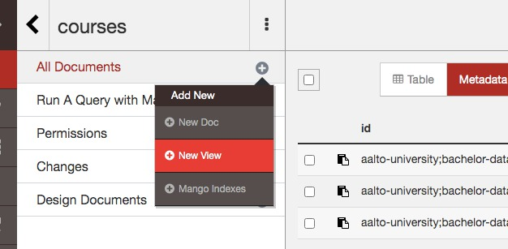
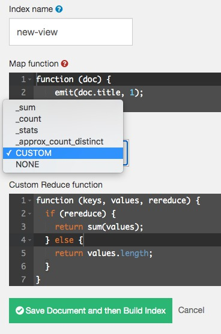
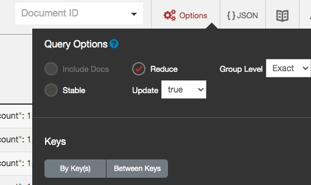

Deze oefeningen volgen de theorie van 11.3.3 op pagina 320.
Deze oefeningen gaan verder op de database die je hebt opgezet in 2. document stores. Herinstalleer indien nodig en download de benodigde gegevens via de instructies (2.2 Oefeningen: voorbereidingswerk) in die link. Start voor onderstaande oefeningen de lokale CouchDB Server en de Admin Console (Project Fauxton) opnieuw op.
Zoals ook op de PouchDB docs vermeld staat; zijn mapreduce queries niet altijd nodig:
_id raadplegen gaat door middel van de Curl REST APIIndien de DB store < 100.000 records bevat, zoals de onze, kan je ook simpelweg alles in-memory inladen (bijvoorbeeld in de browser), en met javascript zelf verder filteren:
const db = pouchdb.get(); // zoiets
// ...
const skillsOfBigCourses = db.filter(doc => {
return doc.ECTS > 6
}).map(doc => {
return skills
})
// gebruik dit in een template HTML factory
Een mapreduce query is in PouchDB uitvoerbaar met db.query() en in CouchDB deel van de _view API. Klik dus op het plusje + bij All Documents en dan op “new view”:

Daar kan je een nieuwe “map” functie aanmaken:
function (doc) {
emit(doc._id, 1);
}
Merk op dat hier de JavaScript syntax geldt. emit() betekent “geef als key deze waarde terug voor elk gevonden document”. Als je dit verandert naar doc.title wordt er een view aangemaakt die documenten op titel bewaart, om daar zeer snel in te kunnen zoeken. Bovenstaande functie wordt uitgevoerd voor elk document, vandaar de “map” in de naam. Het zou kunnen dat je filtert, vandaar de “reduce” in de naam.
Ik kan dus gewoon if() gebruiken, en zo documenten filteren. Alle cursussen gegeven in het tweede jaar of later:
function (doc) {
if(doc.year > 1) {
emit(doc.title, 1);
}
}
Stel dat ik de totale ECTS punten wil verzamelen van alle Belgische vakken in de database. Dus: eerst filteren op country property, en daarna de som nemen van alle ECTS properties. Hoe doe je zoiets in SQL? Met SUM() en GROUP BY:
SELECT title, SUM(ECTS) FROM courses
WHERE country = "Belgium"
GROUP BY titleHoe doe je zoiets in NoSQL/Mongo/CouchDB? Met Reduce Functions. Je kan in Fauxton bij het bewerken van je view een CUSTOM waarde in de Reduce combobox selecteren:

De rereduce parameter mag je negeren, dat betekent zoals de CouchDB docs verklaart:
Reduce functions take two required arguments of keys and values lists - the result of the related map function - and an optional third value which indicates if rereduce mode is active or not. Rereduce is used for additional reduce values list, so when it is true there is no information about related keys (first argument is null).
Dus, map functie om te filteren op België:
function (doc) {
if(doc.country == "Belgium") {
emit(doc._id, doc.ECTS);
}
}
Door ECTS in emit() mee te geven (als VALUE!) kunnen we in de reduce functie de array values manipuleren. En de reduce functie om de ECTS punten op te tellen:
function (keys, values, rereduce) {
return sum(values);
}}
Klik op “Run Query”. De resultaten zijn de resultaten van de MAP - de Reduce value moet je expliciet enablen door vanboven rechts op “Options” te klikken, en dan “Reduce” aan te vinken:

Merk op dat je met “Group Level” moet spelen (Op None zetten) om de groepering te doen werken, anders gaat de reduce functie de som nemen op elk indiviudeel document, wat uiteraard geen correct som is.
Merk op dat reduce functies verschillende keren kunnen worden opgeroepen - en dat reduce reeds kan beginnen voordat map klaar is met zijn werk. Deze maatregelen zijn genomen om vlot om te kunnen gaan met miljarden records, verticaal verspreid over verschillende clusters.
title property hebben, of deze null is. Wat dan?explicit op true heeft staan.ECTS punten van alle cursussen. Doe dit op drie manieren:
_sum functie.sum() zoals hierboven in het voorbeeldvalues.reduce() gebruikt: zie docs Array.prototype.reduce().dbClient.view(). Zie LightCouch docs.emit(doc._id, 1) en emit(doc._id, doc.year)?map(), reduce() en filter() in Javascript? Hint: Zie Mozilla MDN Web Docs.